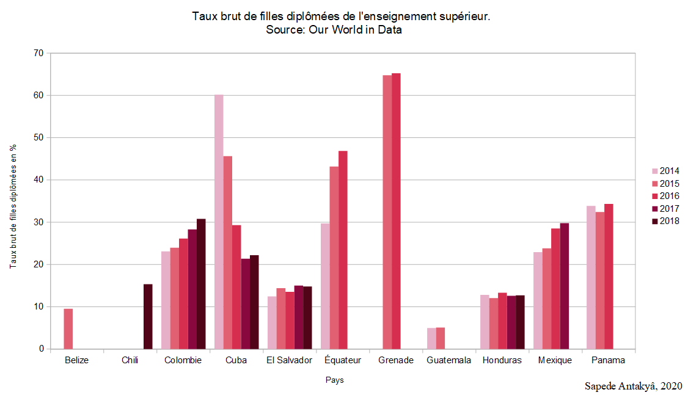

Au cours de la réunion sur l'éducation de l'UNESCO située à Lima (Pérou) en 2015, plusieurs représentants gouvernementaux des pays d'Amérique latine et des Caraïbes se sont mis d'accord pour redoubler d'engagements sur le domaine de l'éducation. Etant une région du monde où l'éducation reste encore très faible en terme d'enseignement et parfois d'accès selon les pays, la déclaration de Lima à pour but de garantir le droit à l'éducation pour toutes les personnes voulant avoir un enseignement.
Cette déclaration souligne que « pour atteindre l’équité et l’inclusion, il faut garantir le droit à l’éducation de tous les enfants, jeunes et adultes, ainsi que leurs droits dans le cadre, et par le bias de l’éducation à réaliser leur potentiel et leurs aspirations. Il faut également prendre en compte la diversité des besoins de tous les apprenants en renforçant leur participation à l’apprentissage et en réduisant l’exclusion au sein de l’éducation ».
Grâce à cet indice, il est possible de voir qu'en Amérique latine et aux Caraïbes, le parcours d'enseignement des filles tend à être plus long que les garçons pour certains pays. En effet, le taux de scolarisation dans le secondaire, montre que les filles qui ont pu accéder à l'enseignement primaire, ont pu suivre leur cursus scolaire dans le secondaire (Suriname en 2014 et 2015, Honduras...).
Il est aussi important de souligner que dans quelques pays comme la Bolivie ou le Pérou, ce sont principalement les garçons qui ont un accès plus important dans le secondaire. On peut aussi constater qu'en Amérique Latine, il y a plusieurs pays où la parité des sexes est quasiment présente depuis ces dernières années, sûrement dû à un enseignement plus facile d'accès et que les raisons sociales impactent moins la vie des jeunes filles.
Les diplômes de l'enseignement supérieur révèlent une disparité d'éducation.
En revanche, lorsqu'on regarde l'enseignement secondaire des filles, on constate un taux brut très faible en ce qui concerne les diplômes. La majeure partie des pays dont les données ont été récoltées, le taux de filles diplômées est généralement en dessous de 50% et particulièrement en dessous de 35%, à l'exception de Grenade. Cependant ces chiffres sont à prendre avec du recul, car ici, nous ne savons pas combien de filles ont suivi un enseignement supérieur, mais on peut seulement constater qu'il y a de forts échecs en terme de diplômes dans l'enseignement supérieur.
Source: Andina
En augmentant le budget de l’éducation ou en réajustant les
dépenses de l’éducation, plusieurs aides pourraient être données
à des familles démunies. Cela favoriserait l’accès à
l’éducation et permettrait aux filles de grandir dans un lieu plus
sain, puisque les familles ne seront pas obligées de faire autant de
concessions économiques pour qu’elles aillent à l’école.
Cet épanouissement
scolaire serait d’autant plus présent avec une éducation dans un
bâtiment, qui respecterait la mise en place de plus de normes
(électricité, eau, sanitaire, bureaux…), pouvant être bénéfique
sur les besoins des enfants car ils seront dans un environnement
adapté.
Les gouvernements doivent réformer leurs programmes d’enseignements pour qu’ils puissent s’adapter au niveau des élèves, et qu’ils aient à disposition plus de moyens pour apprendre. Les filles dans les campagnes auront davantage des moyens leur permettant d'apprendre en classe les incitants alors à ne pas décrocher et poursuivre les études. Un système éducatif adapté à tous les enfants, leur permettra d'évoluer plus facilement à travers les différentes classes.
À long terme, l’enseignement permettra aux filles d’accéder à des métiers plus diversifiés, suite à des années d'études plus longues. Elles pourront donc grimper plus facilement les échelons de leur métier et avoir un épanouissement économique, social et culturel. Leur intégration au sein de la société permettra de changer beaucoup de choses, et elles pourront enfin avoir une certaine liberté (politique, revendication...) que leur mère n’a potentiellement jamais connus.
created with
Website Builder Software .